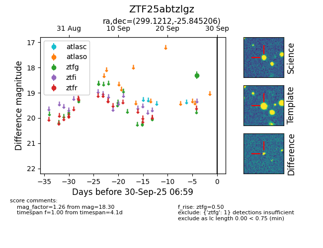

FINK: ZTF25abtzlgz
Lasair: ZTF25abtzlgz
ALeRCE: ZTF25abtzlgz
ZTF25abtzlgz (ztf,fink)
equatorial (ra, dec) = (299.1212,-25.84521)
galactic (l, b) = (15.3922,-25.02875)

last ztfg=18.30
1 ztfg detections